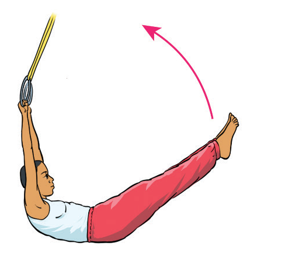
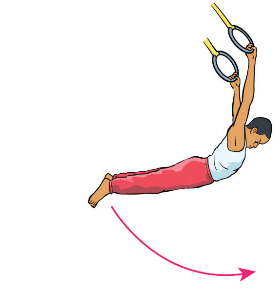

Swings
Swings are a fundamental movement in gymnastics that involves a controlled, rhythmic motion of the body around a bar or set of rings. It includes forward and back swings, and tap swing on bars. Other swings on bars include straight-body swings, pike swings, straddle swings and giant swings.
Forward and back swing on rings
The forward and back swing on rings is a swinging movement where a gymnast swings the body forward and backward while hanging from the rings, Figure 4.35. They are typically part of the basic swing technique on rings. The following steps will help you practice the forward and backward swing on rings:
-
(i)
Hang from the rings with your arms fully extended and feet off the ground. Keep your body straight, grip the rings firmly, engage your core, and maintain a slight bend in your knees;
-
(ii)
Lean your upper body slightly backward and push your legs behind you. Use your arms and shoulders to help create momentum, applying a gentle pull as you lean back;
-
(iii)
Let the momentum carry your body forward. As your legs swing ahead, kick your hips upward toward the rings while allowing your upper body to follow naturally; and
-
(iv)
When you reach the peak of the forward swing, let your legs extend in front of you. Then begin leaning backward again to smoothly transition into the backward phase of the swing.


Figure 4.35: Forward and Backward swing on the still rings